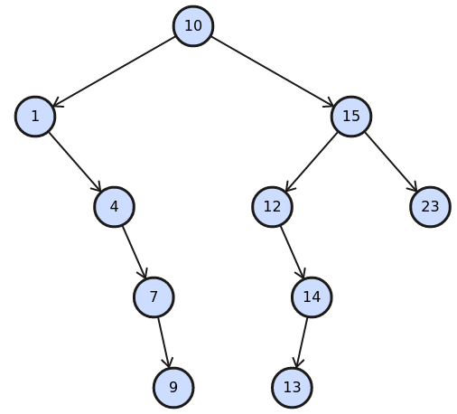
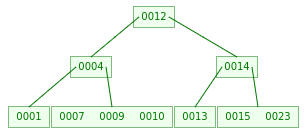
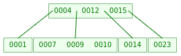

Exam Policies
|
|
- Consider vertices in alphabetical order, and edges in lexicographic order of endpoints.
- Please show as much work as you can.
- If you feel a question is ambiguous, explain your interpretation and answer accordingly.
- Please label/number your pages clearly and staple them in order when handing in.
Final exam [110 pts; counted out of 100] ###
- (3 pts)
Say you are sorting an array that is nearly pre-sorted:
e.g., only one element is out of place.
Which sorting algorithm (of the ones we learned)
would be most appropriate? Why?
Insertion sort can do this in `O(n)`
- (3 pts)
In a table of millions of users, each user has a
unique 32-bit ID number. You wish to sort by ID number.
Which sorting algorithm (of the ones we learned)
would be most appropriate? Why?
Radix sort, since the values to be sorted are of a fixed bit length
- (6 pts) Prove from definition:
`10 n^2 log n + O(n log^2 n) = O(n^2 log n)`
Let `f(n) in O(n log^2 n)`. So `exists c_0, n_0 > 0` such that `f(n) <= c_0 n log^2 n, forall n > n_0`.
Let `c_1 = 10 + c_0`.
Then for all `n > n_0`, we have that `10 n^2 log n + f(n)` `<= 10 n^2 log n + c_0 n log^2 n` (property of `f`)
`<= 10 n^2 log n + c_0 n^2 log n` (since `log n < n`)
`= (10 + c_0) n^2 log n` `= c_1 n^2 log n, forall n > n_0` - (6 pts)
Let `F_0 = F_1 = 1, and F_n = F_(n-2) + F_(n-1), forall n > 1`.
Let `phi = (1+sqrt 5)/2 ~~ 1.62`, such that `phi^2 = phi + 1`. Prove by induction: `F_n <= phi^n`Base case: `F_0 = 1 = phi^0`, and `F_1 = 1 <= 1.62 ~~ phi^1`.
Inductive step: `F_n = F_(n-2) + F_(n-1)` (the given recurrence)
`<= phi^(n-2) + phi^(n-1)` (by inductive hypothesis)
` = phi^(n-2)(1+phi)` (factoring out `phi^(n-2)`)
` = phi^(n-2) phi^2` (property of `phi`)
` = phi^n`. - (4 pts) Solve the recurrence:
`T(n) = 4T(n/2) + n^2 log_2^2 n`
Master method with `a=4, b=2, and f(n)=n^2 log_2^2 n`:
Apply polylog extension with `f(n)=n^(log_b a) log^k n and k=2`:
Solution is `T(n) = Theta(n^(log_b a) log^(k+1) n) = Theta(n^2 log_2^3 n)` - (8 pts) Demonstrate heap sort
on the following. How many swaps?
[ F, L, B, C, M, X, D, V, T, S ]28 swaps total.
After the initial heapify: [ X V F T S B D C L M ] - (4 pts)
Suppose we have a partitioning scheme, called
LopsidedPart, for Quicksort.LopsidedPartcan perform a partition in `O(n)` time, but the larger portion can be up to 99% of the array. What is the worst-case complexity of Quicksort usingLopsidedPart? Why?`O(n log n)`
- (4 pts)
Prove or disprove: counting sort
on a list of `n` integers runs in `O(n)` time.
FALSE: counting sort's running time depends on the space of possible values being sorted. If this space is all integers `ZZ`, then the census array (and hence the running time) can be arbitrarily large. E.g., sorting `[ 0, 2, 1, 10^6 ]` requires a census with at least a million entries. Any implementation necessarily will have a limit on the range of possible values.
- (6 pts)
Is deletion in a binary search tree
commutative?
I.e., do "del(x), del(y)" and "del(y), del(x)"
always yield the same tree?
Prove or give a smallest counterexample.
Assume deletion uses successor. Assume unique keys.
FALSE: consider the BST with pre-order
BADC:
-A -Bresults inDC, but
-B -Aresults inCD - (4 pts)
Recall that depth-first search is `Theta(V+E)`
when using adjacency lists.
What is its running time if an adjacency matrix is used instead?`Theta(V^2)`, the size of the adjacency matrix
- Demonstrate inserting the following in order.
If insertion fails, just note it.
[ 10, 15, 12, 14, 1, 13, 4, 23, 7, 9 ]- (3 pts) A hash table of size `m=11` with
division hash and chaining
0 1 2 3 4 5 6 7 8 9 10 12, 1, 23 13 14 15,4 7 9 10 - (3 pts) A hash table of size `m=11` with
division hash and linear probing
0 1 2 3 4 5 6 7 8 9 10 12 1 14 15 13 4 23 7 9 10 - (3 pts) A hash table of size `m=11` with
division hash and quadratic probing:
`c_1=0, c_2=1`
The probe sequence does not provide full coverage; there is no spot for 23.
0 1 2 3 4 5 6 7 8 9 10 12 1 14 15 4 13 7 9 10 - (4 pts) Same, with double-hashing:
`h_1` = division hash, and `h_2(k) = 5-(k mod 5)`
0 1 2 3 4 5 6 7 8 9 10 12 13 14 15 1 4 23 7 9 10 - (3 pts) A binary search tree
The tree is quite unbalanced; preorder:
[ 10 1 4 7 9 15 12 14 13 23 ]

(BST demo) - (6 pts) A B-tree with `t=2`
(using pre-emptive split/merge, as in lecture)
By level: (12) / (4) (14) / (1) (7 9 10) (13) (15 23)

( B-tree demo, max degree = 4, pre-emptive split/merge) - (2 pts) Now, delete 13 from the B-tree.
By level: (4 12 15) / (1) (7 9 10) (14) (23)

- (3 pts) A hash table of size `m=11` with
division hash and chaining
- You are managing a large youth-sports database; each participant
is assigned one of nine team colours.
The list of colour assignments is very long, and you would like to
compress it. The colours and relative frequencies
are given below:
R O Y G B I V W K 28% 6% 4% 16% 26% 2% 8% 3% 7% - (6 pts) Construct a Huffman tree, following the pseudocode in lecture.
- (2 pts) Encode each colour in
binary using your Huffman tree.
R O Y G B I V W K 10 1100 0010 111 01 00110 000 00111 1101 - (2 pts) Derive the compression ratio
relative to fixed-length encoding.
To encode 100 symbols: 2(26+28) + 3(8+16) + 4(4+6+7) + 5(2+3) = 273 bits.
Fixed-length (`|~ log_2 9 ~|` = 4 bits per symbol): 400 bits.
Compression ratio: 400/273 = 1.4652.
(File size: 273/400 = 68.25%, savings = 1-273/400 = 31.75%)
-
You are a wedding planner, deciding the guests'
seating arrangement.
For each guest `u`, you have a list of which other guests `v`
are known by `u`.
Assume commutativity;
i.e., if `u` knows `v`, then `v` also knows `u`.
We wish to minimise the number of tables
while ensuring that each guest knows every
other guest at his/her table, either directly or indirectly
(via a series of intermediate friends).
- (5 pts) Describe an efficient
algorithm to solve this.
If guests are vertices, and relationships are edges, then the problem is just the connected component problem on an undirected graph, which can be solved by two runs of DFS.
- (2 pts) Analyse the complexity
of your algorithm.
`O(|V| + |E|)`
- (5 pts) Describe an efficient
algorithm to solve this.
- (9 pts)
In the left-hand graph below, demonstrate
Bellman-Ford for shortest paths from
the source `a`. What is a shortest path from `a` to `f`?
The prescribed sequence of edges is (a,b), (a,e), (b,d), (c,b), (c,e), (d,c), (d,f), (e,c), (e,d), (f,e)
Pass: a b c d e f 1: 0 5 4 7 5 8 2: 0 3 4 7 5 8 3: 0 3 4 5 4 6 4: 0 3 3 5 4 6 5: 0 2 3 5 4 6 6: 0 2 3 4 3 5 Since the shortest-path estimates keep changing even after `|V|-1 = 5` iterations, we observe there is a negative-weight loop (b, d, f, e, c) of net weight -1. The shortest-paths problem is not well-defined on this graph. For any path from `a` to `f`, one can construct a path of even lower weight just by traversing the above loop another time.
- (9 pts)
The right-hand graph above is the same except
`w(c,b)=1`. Demonstrate Floyd-Warshall for
all-pairs shortest paths on the right-hand graph.
Show the `D` matrix after each iteration `k`.
- Original adjacency matrix:
`((0, 5, oo, oo, 5, oo), (oo, 0, oo, 2, oo, oo), (oo, 1, 0, oo, 1, oo), (oo, oo, -1, 0, oo, 1), (oo, oo, -1, 2, 0, oo), (oo, oo, oo, oo, -2, 0))` - At k=2, by routing through `{a,b}`, we can get from
`a` to `d` in weight 7, and from `c` to `d` in weight 3:
`((0, 5, oo, 7, 5, oo), (oo, 0, oo, 2, oo, oo), (oo, 1, 0, 3, 1, oo), (oo, oo, -1, 0, oo, 1), (oo, oo, -1, 2, 0, oo), (oo, oo, oo, oo, -2, 0))` - At k=3, via `{a,b,c}`: change `d_(db)=0, d_(eb)=0`:
`((0, 5, oo, 7, 5, oo), (oo, 0, oo, 2, oo, oo), (oo, 1, 0, 3, 1, oo), (oo, 0, -1, 0, oo, 1), (oo, 0, -1, 2, 0, oo), (oo, oo, oo, oo, -2, 0))` - At k=4: `d_(ac)=6, d_(af)=8, d_(bc)=1,
d_(be)=2, d_(bf)=3, d_(cf)=4, d_(ef)=3`:
`((0, 5, 6, 7, 5, 8), (oo, 0, 1, 2, 2, 3), (oo, 1, 0, 3, 1, 4), (oo, 0, -1, 0, oo, 1), (oo, 0, -1, 2, 0, 3), (oo, oo, oo, oo, -2, 0))` - At k=5: `d_(ac)=4, d_(db)=-1, d_(dc)=-2,
d_(fb)=-2, d_(fc)=-3, d_(fd)=0`
`((0, 5, 4, 7, 5, 8), (oo, 0, 1, 2, 2, 3), (oo, 1, 0, 3, 1, 4), (oo, -1, -2, 0, oo, 1), (oo, 0, -1, 2, 0, 3), (oo, -2, -3, 0, -2, 0))` - At k=6: `d_(be)=1, d_(de)=-1`:
`((0, 5, 4, 7, 5, 8), (oo, 0, 1, 2, 1, 3), (oo, 1, 0, 3, 1, 4), (oo, -1, -2, 0, -1, 1), (oo, 0, -1, 2, 0, 3), (oo, -2, -3, 0, -2, 0))`
- Original adjacency matrix:
- (3 pts) Which of the many algorithms we learned in this course is your favourite, or sticks in your mind the most? Why?